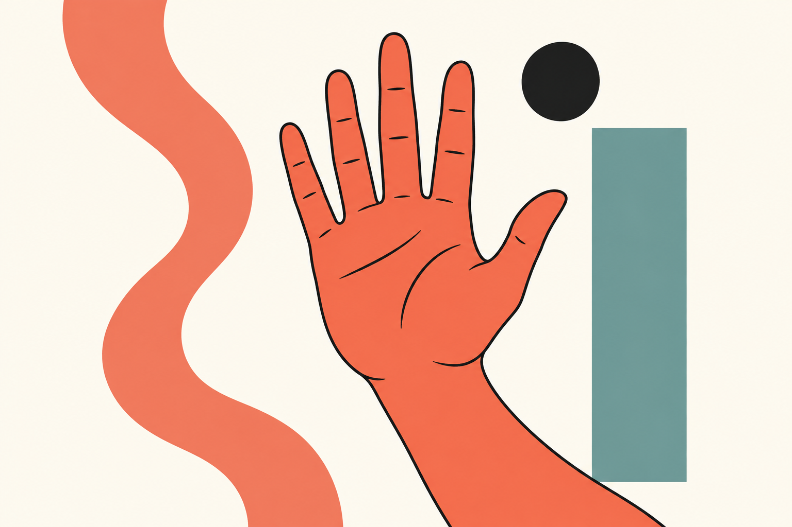
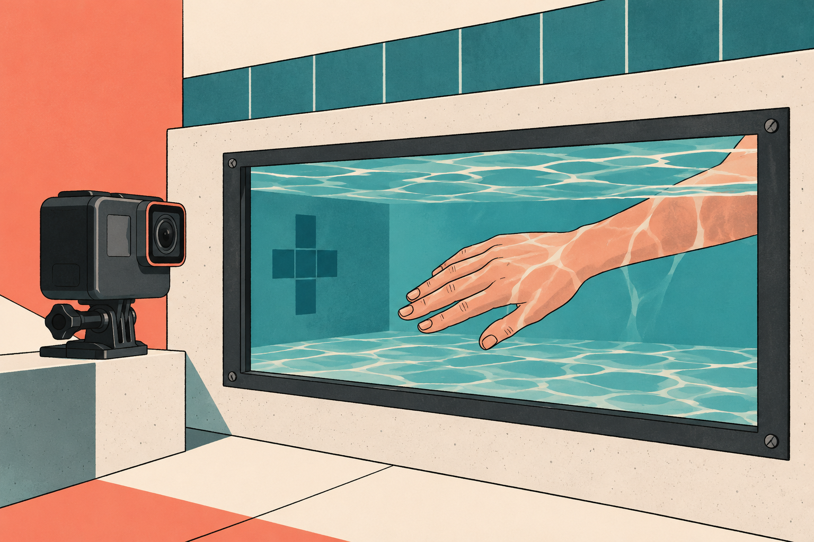
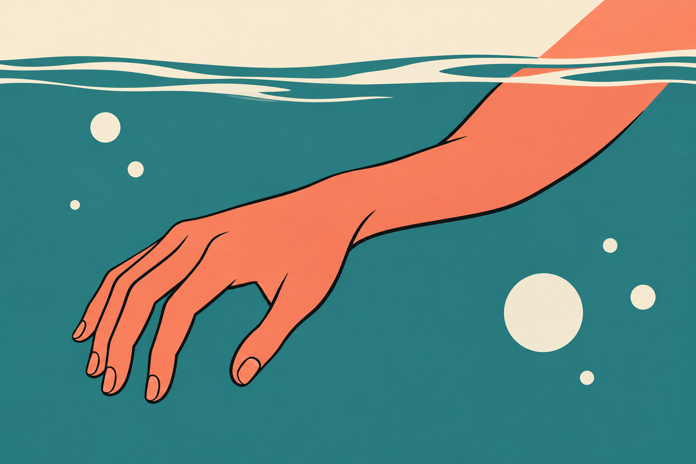
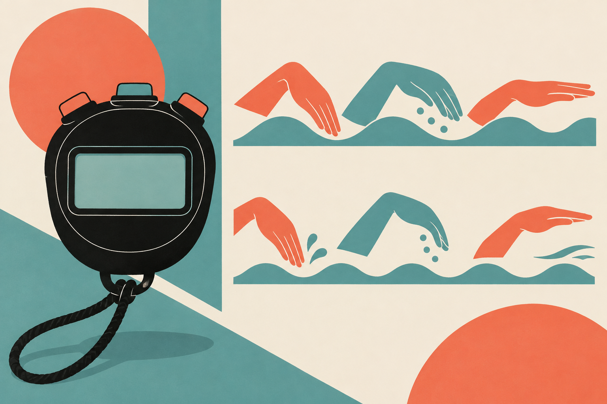
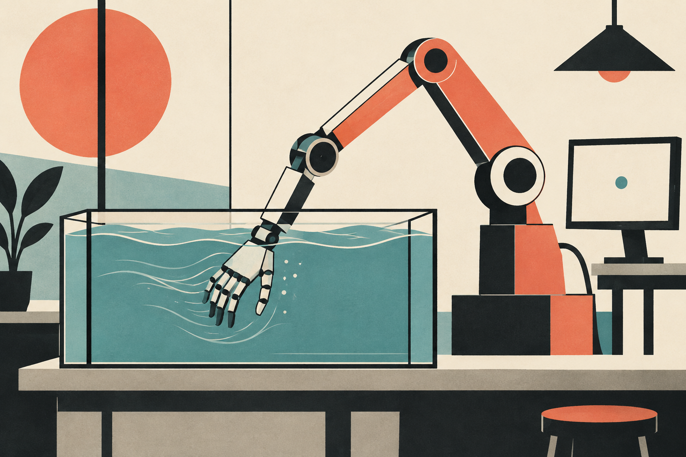

SWIMMING RESEARCH / 05
クロールはS字よりI字でかくほうが速い？
手の軌道、肘、テンポを分けて考える

「昔はS字でかくと教わったのに、今はまっすぐ引くほうがよいと言われる」。クロールの説明を読んでいると、どちらを信じればよいのか迷います。形を変えようとして、かえって水を押しにくくなった人もいるかもしれません。
研究から持ち帰れるのは、横に大きく手を動かせば有利になるわけではない、ということです。ただし、I字という線を再現すれば誰でも速くなる、とまでは分かっていません。手の通り道と肘の曲げ方、動かす速さを一緒に変えてしまうと、何が役立ったのか見えなくなるからです。
海外の科学記事と元の研究をたどりながら、まず何を比べているのかを整理します。そのうえで、自分の泳ぎで一つ試すなら、どこに注目するかを考えていきましょう。
1 S字とI字は、何の形を指している？
S字・I字は、主に水中で手が通る道筋を表す呼び方です。横への動きを含む曲線的な軌道と、比較的まっすぐ後方へ引く軌道。ただ、その名前だけでは肘の曲がり具合や、掌がどちらを向くかまでは決まりません。

例えば、肘を曲げたままでも、手の横移動を小さくすることは考えられます。反対に、手の通る道が似ていても、掌の向きや動かす速さが違えば、水との関わりは変わります。「手をまっすぐ動かす」と「肘を伸ばし切って引く」は、別の指示です。
指導者Abbie Fishの海外記事でも、S字のプルと、肘をほぼ伸ばして引くstraight-arm pullが取り上げられています。これは動作を考える手掛かりですが、同じ軸で分けた二択ではありません。英語のstraightという言葉だけを拾うと、手の軌道の話を肘の話へ読み替えてしまいます。［1］
図で確かめる
「まっすぐ」は、どこを指す？
「軌道」は手が通る道、「掌」は手のひら、「プル」は水中で腕を引く動作です。手の道をまっすぐに近づける話と、肘を伸ばす話は分けます。I字という名前だけで、肘をピンと伸ばす必要があるとは決まりません。
手が通る道を見る
軌道＝場所の変化
同じ手を、違う時点で追う
最初途中その後
点は同じ手の位置。線は点をつなぐ道です。
肘の曲がりを見る
肘＝腕のつなぎ目
同じ時点で、腕の形を見る
○のつなぎ目が肘
二本の棒は腕の二つの部分
この曲がり方が正解、という図ではありません。
「道の形」と「肘の曲がり」は、見る対象が違います。一方の名前だけで、もう一方は決まりません。
指導を受けるときは、「手の横移動を減らす意味ですか。それとも肘の使い方ですか」と確かめると、試すことが具体的になります。手の軌道、肘、掌の向き、テンポ。この四つをいったん分けることが、S字・I字の議論を練習へつなぐ入口です。
2 同じ手の動きでも、見る基準が違う
プールサイドから泳者を見ると、身体は前へ進み、その下で手が動いています。一方、泳者と一緒に移動する視点なら、身体の前進分を差し引いて手を見ることになります。どこを基準にするかで、記録される手の通り道は変わります。

歩きながら腕を前後に振る場面を想像してみてください。歩く人から見た手の動きと、道端から見た手の動きには、身体が進んだ分の違いがあります。泳ぎでも同様に、線を比べる前に「何に対して動いた線か」をそろえる必要があります。身体の回転に合わせた視点なら、その回転も関わります。
図で確かめる
同じ3場面を、違う目印から見る
「道の目印を固定」は立ったまま、「身体の目印を固定」は歩く人と一緒に動く見方です。身体の目印を固定するときは、身体の位置をそろえるため、手の点も身体が進んだ分だけずらしています。これは歩行の説明用の仮の位置で、泳いだ手の実測軌道ではありません。
記号：┃ 身体の目印 ● 手の位置
それぞれの点の位置を、①→②→③の順に見ます。
道の目印を固定
身体も手も、道に対して移動
身体の目印を固定
身体をそろえて、手の位置を見る
①どうし、②どうし、③どうしは、それぞれ同じ時点です。身体の目印を固定した図では、身体の移動分を差し引いています。
今回扱う数値研究には、平均泳速で移動する座標を使ったものがあります。これはプールに固定したカメラとも、胸の回転にぴったり付いて回る視点とも同じではありません。論文の手先の線と、自分の動画で見えた線を、そのまま重ねて採点しないようにします。［2］［3］
もちろん、S字に見える動きがすべて視点のせいだ、という意味ではありません。実際の横移動もあります。自分の動画を見るなら、まず同じ撮影位置と同じ泳ぐ方向で比較し、「どの場面で手が外や内へ動いたか」を指導者と確かめます。アルファベット一文字にまとめるより、直したい局面を見つけやすくなります。
3 「I字が強い」研究は何を比べた？
2012年のScientific Americanの記事は、まっすぐに近い引き方と、横へ掃くような引き方をめぐる議論を紹介しています。研究者の推進力に関する見解と、指導者の抵抗を重視する見解が同じ記事に登場します。単純に一方の勝利を宣言した内容として読むと、取り落とす点があります。［4］

元の研究は、五輪級泳者の映像を基に腕の動きを計算したものです。直線寄りの例で推力と推力係数が大きくなりましたが、軌道だけを変えた比較ではありません。［2］
クロールでは、直線寄りの例が泳速1.2m/秒・プル時間0.60秒、横動作の大きい例が1.8m/秒・0.73秒でした。肘の使い方も異なり、著者自身が動作条件の違いを限界として説明しています。
図で確かめる
① 身体の速さの条件が違った
1.2m/秒は「1秒で1.2m進む速さ」です。下は、計算に用いた二つの例の速さを同じ物差しで比べています。引き方を変えた結果、同じ泳者がこの速さになった、という実験結果ではありません。
棒が長いほど、身体の速さの設定が大きい。軌道の優劣を表す棒ではありません。
図で確かめる
② 腕を引く時間も違った
0.60秒は「腕を引く動作にかかった時間」です。身体の速さを表すm/秒とは別のものなので、1.2と0.60を大きい・小さいで直接比べません。
棒が長いほど、腕を引く時間が長い。身体速度・引く時間・肘の使い方が違うため、線の形だけの勝敗にはできません。
計算は片腕の水中の一かきに限られ、水面や全身の影響は含みません。「線を直せば同じ割合でタイムが縮む」と読むことはできません。練習へ持ち帰る前に、測ったものと知りたいことが同じかを確かめます。
図で確かめる
腕の力と、泳ぎ全体のタイムは別の範囲
この計算で見たのは、片腕が水中を動く一かきです。身体全体が受ける抵抗や、実際にプールを泳ぎ切る時間まで一緒に調べたわけではありません。
片腕の水中の一かき
→ 腕が生み出す推力
水面・全身の影響
実際の泳者のタイムの変化
4 速さと効率の違いには、テンポも関わる
「I字は速さ、S字は効率」と分けた説明も見かけます。根拠の一つとなるNakashimaらの研究は、大学男子競泳選手5人の筋力測定を制約に取り入れ、モデルの中で腕の動かし方を最適化したものです。実際の選手を短距離派と長距離派に分けた介入試験ではありません。［3］

計算では、速さを最大にする解は1周期0.9秒で比較的I字、推進効率を最大にする解は1.3秒で比較的S字でした。けれども、もう一つ大切な結果があります。同じ周期で比べると、速さ重視と効率重視の最適な動きは似ていました。目的だけでなく、腕を一周させる時間も関わっていたのです。
図で確かめる
繰り返す時間も違った
1周期は、たとえば右腕がある状態から左右の動作を経て、次に同じ状態へ戻るまでです。0.9秒のほうが1.3秒より短い時間で繰り返します。下の値はモデルが選んだ条件で、自分の目標テンポではありません。
周期が違うとき
選ばれた動きに違いがあった
↓ 周期を同じにそろえて比べる
選ばれた動きは似ていた
ここでいう効率は、モデルが扱う力学的な指標です。酸素消費量を測った結果でも、本人が楽だと感じた程度でもありません。「効率がよい」という言葉を、そのまま「長く楽に泳げる」へ置き換えると、研究とは別の主張になります。
「効率がよい」と「息が楽」は同じ測定ではない
この研究での推進効率は、モデル内で力や仕事を計算して比べる指標です。本人に「楽でしたか」と聞いた値でも、使った酸素の量でもありません。楽に続けられるかは、別に確かめる問いとして残ります。
この結果から、自分の周期を0.9秒や1.3秒へ合わせる必要はありません。役立つのは、軌道を変えたつもりでもテンポが変わっていないか、という見方です。少ない回数で進めても一かきに時間がかかれば、到着は遅くなることがあります。速さと回数を合わせて見る考え方は、ストローク回数と進む距離の記事ともつながります。
5 曲がる手は、すべて無駄なのか
横へ大きく振ることが必ず得ではないとしても、手の曲線をすべて消すべきだとは限りません。手は動きながら向きや速さを変え、周囲の水もその影響を受けています。紙に描いた一本の線だけでは、その間に生じる力は決まりません。

Takagiらはロボット腕を使い、クロールを模した動作で手の力や周囲の流れを調べました。公開されている考察では、I字条件の力のピークは大きかった一方、条件で優劣が変わるため、勝敗よりも力が生じる仕組みに重点を置いたと説明しています。ここでも、ピークの力を泳ぎ全体の速さと同じものにはできません。［5］
ピークは「いちばん強かった一瞬」
一かきの途中で力が最大になった瞬間が、力のピークです。それは、一かき全体でどのくらい力が働いたかとも、身体がどのくらい速く進んだかとも別です。一瞬の最大値だけを見て、泳ぎ全体の勝敗は決めません。
手の力から、泳ぎ全体へ
一瞬の大きな力だけでは選べない
動きと向きによって 水から受ける力が変わる
前へ進む動きには 妨げる力もある
同じ区間の速さや 続けやすさを確かめる
また、「I字は抗力、S字は揚力」と二つに分けるのも正確ではありません。抗力・揚力は、手に対して水が流れる向きを基準に、力を分けて考える言葉です。揚力は必ずプールの上へ向く力を意味しません。2012年の計算でも、直線寄りの引き方に揚力の寄与がありました。［2］
力の名前は、水の流れを基準にする
手に対する水の流れと同じ方向の成分を抗力、それと直角の成分を揚力と呼びます。「揚」という字があっても、いつもプールの上向きとは限りません。S字・I字という線の名前だけで、どちらか一方の力に決まるわけではありません。
練習では難しい力の名前を意識し続ける必要はありません。手と前腕がどう働くか、身体がどれほど水の抵抗を受けるか、その組み合わせで前へ進めるか。この三つを分けて考えるだけでも、「手応えが強いから速いはず」という判断から一歩進めます。水を強く押した感覚と、実際に前へ進んだ結果を一緒に確かめましょう。
6 次の練習は、線より一つの意識を比べる
ここからは、研究で効果が実証された定型ドリルではなく、本記事の観察案です。すでに無理なくクロールを泳げる人が、普段の泳ぎを基準に試します。困っていない動作を、I字という名前に合わせるためだけに変える必要はありません。
もしS字を描こうとして手を意識的に大きく横へ動かしているなら、次の一本ではその意識を少し弱めてみます。肘を伸ばし切ることや、掌の向きを固めることまで同時に加えません。自分では分からなければ、どの局面の横移動を変えるかを指導者と一つ決めてから始めます。
線を作るより、一つだけ比べる
普段の泳ぎを基準にする
同じ区間で 時間・回数・余裕を見る
横へ大きく動かす 意識を少し弱める
速さだけでなく 力みや呼吸も確認する
疲労や呼吸の条件が違うときは、判断を持ち越します。
同じ区間を、近い力加減、同じ呼吸の仕方で泳ぎ、十分に休んで普段の泳ぎと比べます。記録するのは時間、数え方をそろえたストローク数、力みや呼吸の余裕です。海外の指導記事には、手の線を直す前に身体の安定や呼吸時の姿勢を見る提案もあります。左右の揺れが気になるなら、手だけの問題と決めず、観察してもらう候補になります。［6］
同じ程度の頑張りで早く着き、無理なく繰り返せるなら、その変更は次回も試す候補です。早くなっても回数や力みが大幅に増えたなら、軌道だけの効果とは決めず、テンポや力加減の違いを確認します。遅くなったり動かしにくくなったりしたら、普段へ戻して変更を小さくします。痛みが出る動きを続ける必要はありません。
一回の小さなタイム差で結論を出さず、慣れや疲労も含めて別の機会に確かめます。変化が分からなければ、無理にまっすぐな形を作るより、実際に何を変えたかを見直してください。選びたいのはきれいなアルファベットではなく、自分が前へ進めて、繰り返せる動きです。
参考資料と確認範囲
- Abbie Fish（2019）The RIGHT Way to Pull in Freestyle
指導者本人の掲載本文を確認。指導意見であり比較実験ではありません。動画は未視聴。 - von Loebbecke & Mittal（2012）Comparative Analysis of Thrust Production for Distinct Arm-Pull Styles in Competitive Swimming
著者所属研究室の全文PDF、方法・結果・考察・表1を確認。 - Nakashimaら（2012）Optimizing Simulation of the Arm Stroke in Crawl Swimming Considering Muscle Strength Characteristics of Athlete Swimmers
発行元本文の方法・結果・結論を確認。モデルの推進効率と生理的効率を区別。 - Larry Greenemeier／Scientific American（2012年7月23日）Push Comes to Pull: What's the Best Freestyle Swimming Stroke?
旧ブログ欄の掲載本文を確認。科学報道であり査読論文ではありません。動画は未視聴。 - Takagiら（2014）Unsteady hydrodynamic forces acting on a robotic arm and its flow field: Application to the crawl stroke
抄録と出版社公開の方法・結果・考察・結論抜粋を確認。原著PDF全文は未取得。 - Andrew Sheaff／220 Triathlon（2022年8月9日）How to pull straight and effectively though the water
指導記事の掲載本文を確認。実践への観察視点として参照し、ドリル動画は未視聴。
イラストは各章の主題を示すために制作したものです。図解は資料の内容を整理した模式図で、実験画像や測定軌道の転載ではありません。